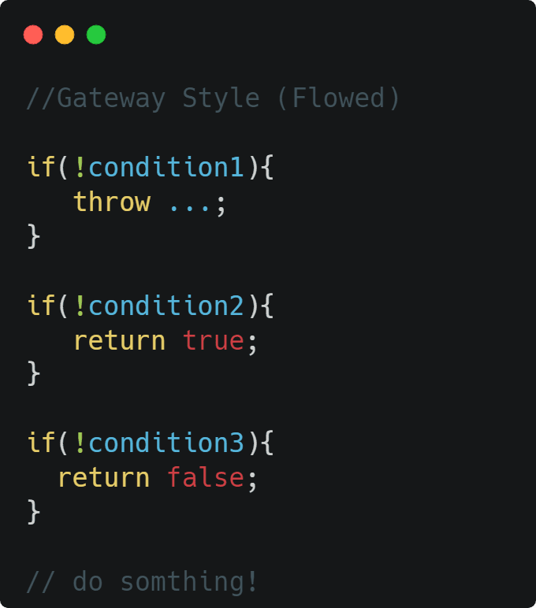
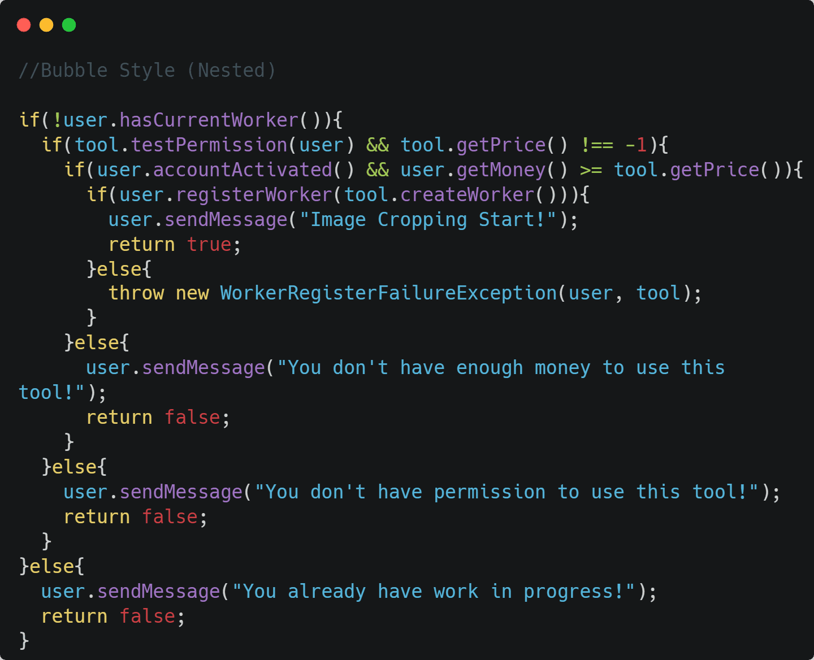
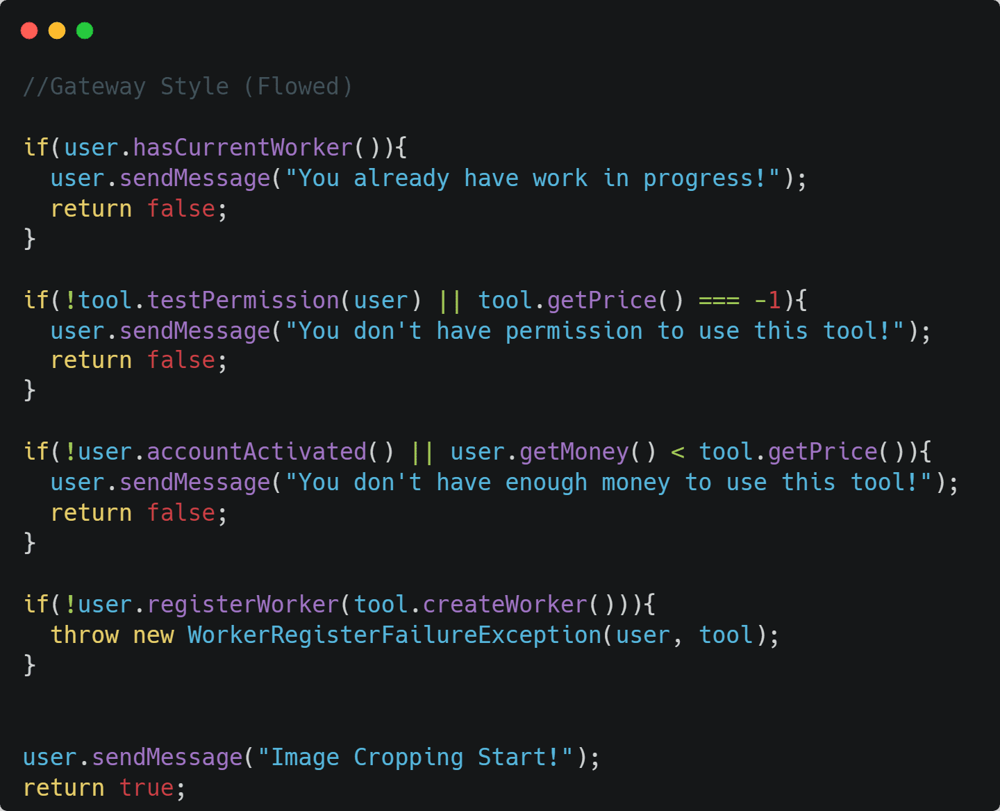

🎨 코드개선 : 중첩된 조건문을 개선하는 방법
2023-10-24
🚩 개요
개발을 하다보면 코드가 뭔가 복잡하고 읽고 이해하기 힘들때가 있습니다. 코드의 가독성이 떨어지는 이유 중 가장 흔한 중첩된 조건문을 개선하는 방법에 대해 생각해봅시다.
❕조건문을 작성하는 방식 두가지
중첩된 분기의 조건문을 작성하는 방식은 아래의 두가지로 크게 나뉩니다.

1번의 Bubble Style의 경우 이 포스트의 주제인 중첩 조건문(nested if statement) 방식입니다. 조건식이 위쪽에 모여있어 상단의 분기로 가는 첫번째 흐름은 보기 쉽지만, 아래쪽 라인처럼 else가 모여있는 곳의 코드를 파악하기가 굉장히 어렵습니다.
2번의 Gateway Style의 경우 빠른 반환(early return)이라고도 불리는 방식입니다. 기존의 코드의 조건식을 반대로 뒤집어 스코프를 벗어나는 되는 부분을 먼저 처리하는 구조이기 때문에, 1번에 비해 훨씬 읽기가 편하고 코드의 흐름이 어디서 중단되는지 파악하기 쉬운 구조를 갖고 있습니다.
위 예제에선 단순하게 condition1같은 형식으로 적어서 읽기가 편하지만, 만약 조건문이 아래와 같다면 굉장히 난해한 코드가 됩니다.


사소하지만 2번 방식의 또하나의 장점인 들여쓰기가 줄어든다는 점 덕분에, 줄 길이의 부족으로 두줄이 되는 코드도 한줄에 들어가게 되죠.
🖐️마침
코드를 먼저 목적에 따라 작성한 뒤 위처럼 개선하는 과정이 있다면, 추후 다시 코드를 읽고 파악할 때 큰 도움이 될 것 같습니다. 가독성이 좋은 코드를 쓰는 습관을 들이기 위해 가장 기초적인 더러운 코드(code smells) 사례를 포스트로 작성해봤는데, 생각보다도 분량이 더 짧은 느낌이네요… 가독성을 위한 포스트를 더 작성하다가 유사한 내용이 나오면 합쳐야겠습니다…ㅎㅎ